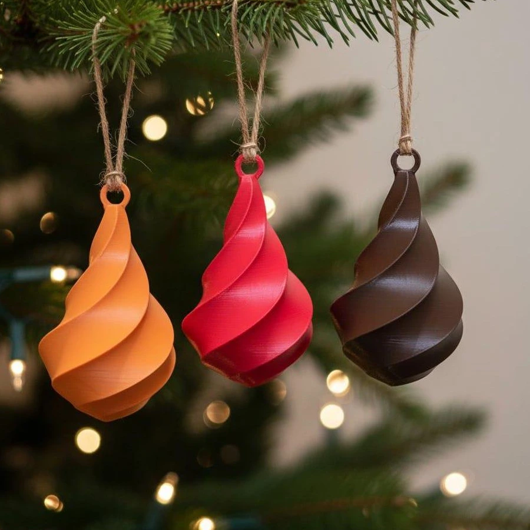
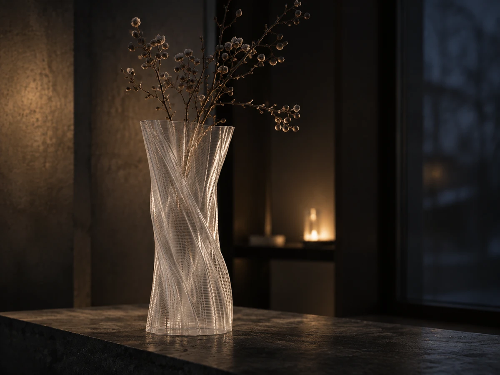
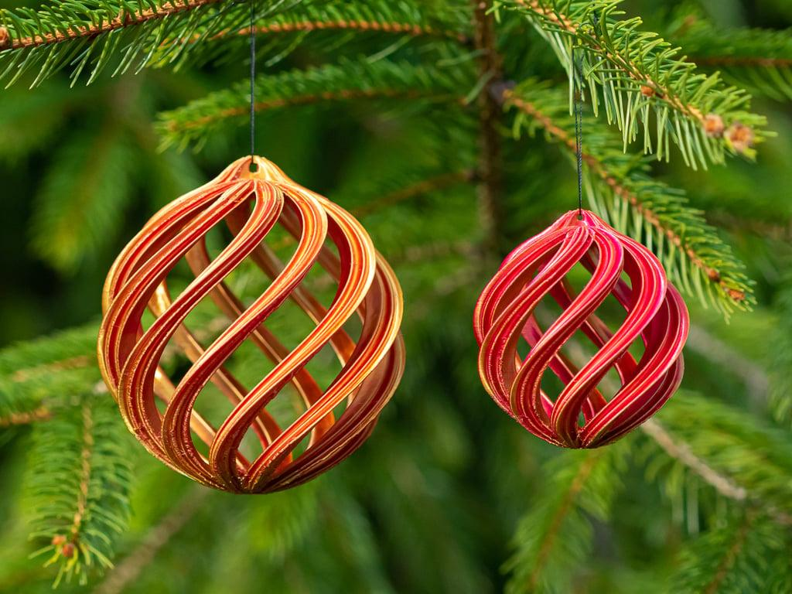
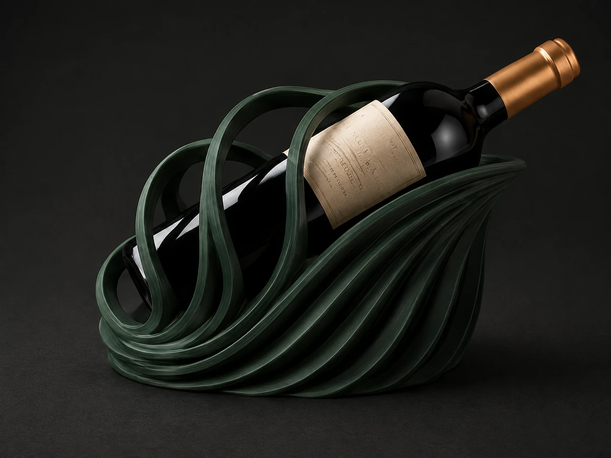
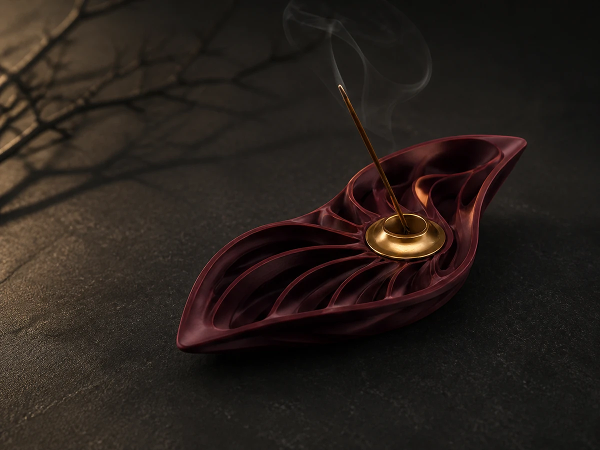
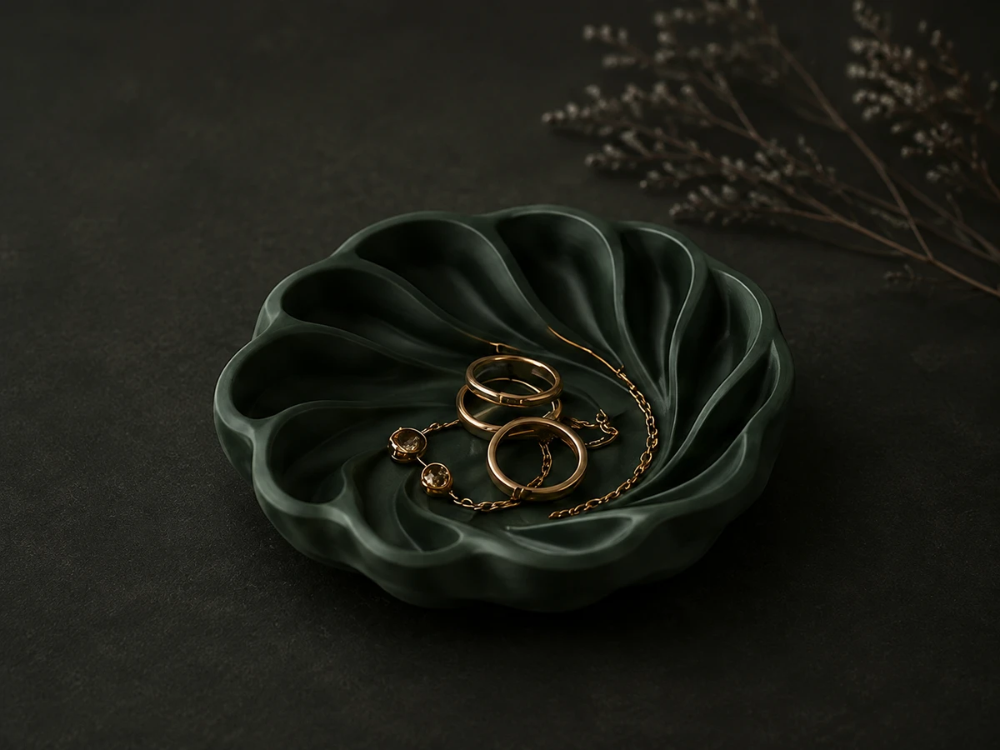
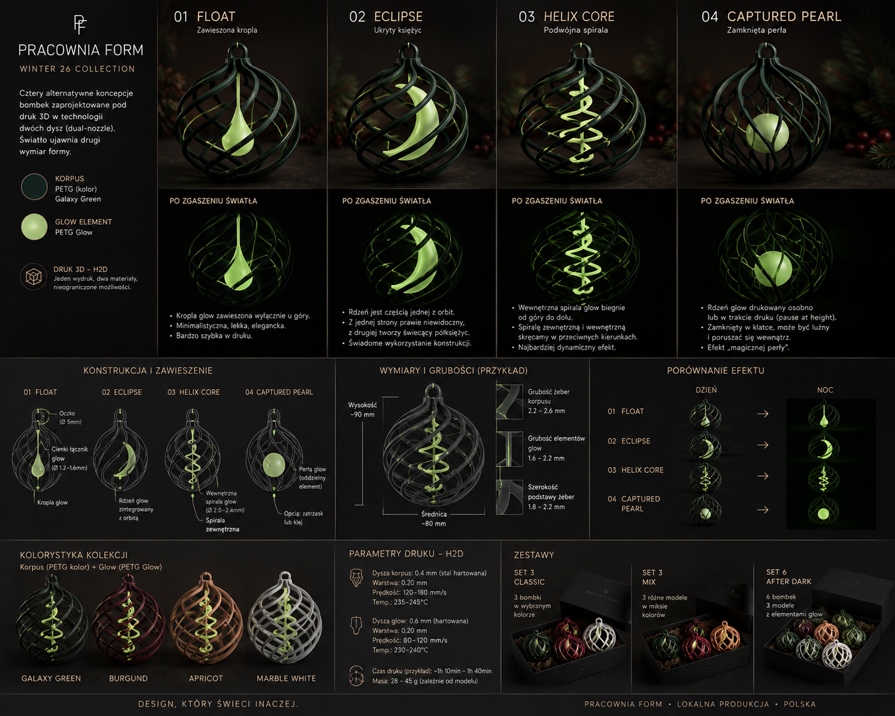

Rzeźbiarska geometria
Asymetria i skręt budują formy, które dobrze wyglądają z więcej niż jednego punktu widzenia.
01 WINTER 26 / kolekcja w przygotowaniu
Pierwsza zapowiedź sezonowej kolekcji Pracowni Form. Rzeźbiarskie obiekty, asymetria, skręt i organiczne kanały zamiast gotowych schematów.

Manifest WINTER 26
Winter 26 zaczyna się od pytania, co dzieje się z formą, kiedy światło nie jest dodatkiem, tylko jej częścią. Odpowiedzią są obiekty do wnętrz i blisko stołu: spokojne w dzień, wyraziste po zmroku.
To kierunek dla osób, które szukają nowoczesnych bombek na choinkę, nietypowych ozdób świątecznych i dekoracji premium, ale nie chcą rezygnować z języka współczesnego designu. Każda forma pozostaje propozycją do dalszego dopracowania, nie obietnicą gotowego produktu.
Kierunek kolekcji
Premium nie oznacza nadmiaru. W Winter 26 oznacza proporcję, ślad ręki i detal, który ujawnia się dopiero z bliska.
Asymetria i skręt budują formy, które dobrze wyglądają z więcej niż jednego punktu widzenia.
Kanały, rdzenie i prześwity nie ozdabiają obiektu. Decydują o jego rytmie w przestrzeni.
Powtarzalność jest tylko punktem wyjścia. Najciekawsze dzieje się tam, gdzie wzór zaczyna płynąć.
Kolekcja powstaje etapami. Ostateczne warianty, wykończenia i dostępność zostaną potwierdzone później.
Obiekty w przygotowaniu
Geometria, światło, organiczny rytm i mała seria — cztery idee łączą trzy pierwsze kierunki kolekcji: SOLIS, HELIX i VINE WAVE CAST.

Wazon 3D o asymetrycznej, skręconej formie. Światło przechodzi przez cienkie ściany i rysuje na nich własny wzór.
Koncepcja / do dopracowania
Designerskie bombki 3D: forma z organicznych żeber, ukryty rdzeń i efekt, który ujawnia się po zgaszeniu światła.
Koncepcja / bez dostępności
Projekt designerskiego stojaka na wino. Rzeźbiarska fala ma porządkować stół i tworzyć mocny punkt kompozycji.
Kierunek projektowyPozostałe obiekty
Małe formy do stołu i wieczornego rytuału. Te kierunki uzupełniają kolekcję, pozostając jej cichszym drugim planem.

Niewielki obiekt ogniowy o płynnej, liściastej konstrukcji. Forma prowadzi światło i dym po wspólnym rytmie.
Kierunek dodatkowy
Miękka, organiczna misa na drobne przedmioty, klucze lub stół. Ta sama fala formy w niższym, spokojniejszym rytmie.
Kierunek dodatkowyProces
Każdy obiekt przechodzi przez etap szkicu, modelu i światła. Sprawdzamy, jak pracuje w dzień, jak buduje nastrój po zmroku i czy jego detal ma sens także wtedy, gdy nie jest oglądany z bliska.
Dlatego ta strona jest zapowiedzią, nie katalogiem. Finalne zdjęcia, warianty kolorystyczne, parametry i moment dostępności pojawią się dopiero, gdy prototypy przejdą kolejne testy.

Pierwsza odsłona
Zapisz się na listę premierową Pracowni Form. Otrzymasz informację o kolejnych prototypach, potwierdzonych wariantach i dacie startu - bez zobowiązania do zakupu.
Przejdź do listy premierowej